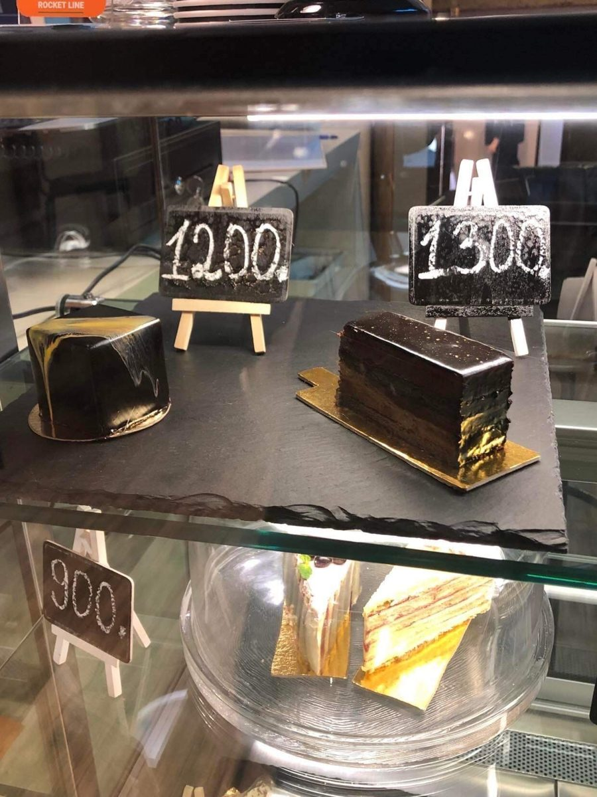

Դեսերտներ
Մի փոքրիկ քաղցր դադար
Պիրոգներ և դեսերտներ՝ սուրճի հետ կամ պարզապես լավ տրամադրության համար։ Ընթացիկ տեսականին ճշտեք այցելելուց առաջ։
Գներն ու տեսականին կարող են փոխվել։ Այս էջը հիմնական ուղղությունների ցուցադրական ներկայացում է, ոչ գործող ամբողջական ճաշացանկ։

Ահա հիմնական ուղղությունները։ Կոնկրետ դեսերտների անունները, բաղադրությունը և առկայությունը ճշտեք սրճարանից։
Բաղադրությունը, հնարավոր ալերգեններն ու արժեքը ճշտեք պատվիրելուց առաջ։